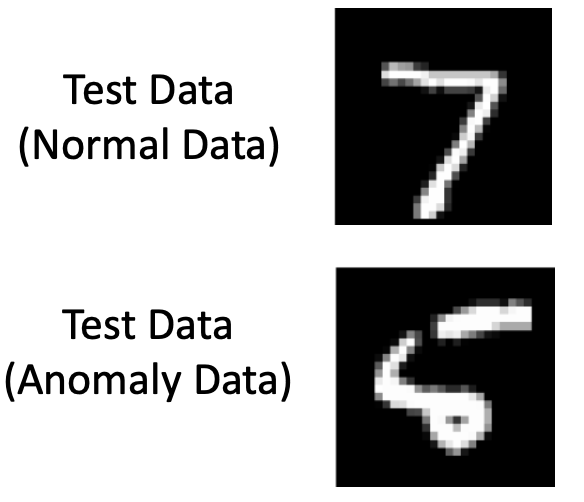

<!DOCTYPE html>
<html lang="ko">
<head>
  <meta charset="utf-8">
  <meta name="viewport" content="width=device-width, initial-scale=1">
  <title>Anomaly Detection | Sehyeog Kim</title>
  <link rel="stylesheet" href="../../../assets/css/style.css">
</head>
<body>
  <!-- Mobile header -->
  <header class="mobile-header">
    <span class="site-title">Sehyeog Kim</span>
    <button class="menu-toggle" aria-label="Menu">&#9776;</button>
  </header>
  <div class="sidebar-overlay"></div>

  <div class="site-wrapper">
    <!-- Sidebar -->
    <aside class="sidebar">
      <div class="sidebar-bg">
        
      </div>
      <div class="sidebar-profile">
        
        <h1 class="profile-name">Sehyeog Kim</h1>
        <p class="profile-bio">AI &amp; Computational Engineering<br>Knowledge Base</p>
        <div class="profile-links">
          <a href="https://github.com/Sehyeogkim" target="_blank" rel="noopener">
            <svg viewBox="0 0 16 16" width="16" height="16" fill="currentColor"><path d="M8 0C3.58 0 0 3.58 0 8c0 3.54 2.29 6.53 5.47 7.59.4.07.55-.17.55-.38 0-.19-.01-.82-.01-1.49-2.01.37-2.53-.49-2.69-.94-.09-.23-.48-.94-.82-1.13-.28-.15-.68-.52-.01-.53.63-.01 1.08.58 1.23.82.72 1.21 1.87.87 2.33.66.07-.52.28-.87.51-1.07-1.78-.2-3.64-.89-3.64-3.95 0-.87.31-1.59.82-2.15-.08-.2-.36-1.02.08-2.12 0 0 .67-.21 2.2.82.64-.18 1.32-.27 2-.27.68 0 1.36.09 2 .27 1.53-1.04 2.2-.82 2.2-.82.44 1.1.16 1.92.08 2.12.51.56.82 1.27.82 2.15 0 3.07-1.87 3.75-3.65 3.95.29.25.54.73.54 1.48 0 1.07-.01 1.93-.01 2.2 0 .21.15.46.55.38A8.013 8.013 0 0016 8c0-4.42-3.58-8-8-8z"/></svg> GitHub
          </a>
        </div>
      </div>
      <nav class="sidebar-nav">
        <a href="/" class="nav-item nav-home">Home</a>
        <span class="nav-label">Categories</span>
        <a href="/blog/advanced-engineering-mathematics/" class="nav-item">Advanced_Engineering_Mathematics<span class="nav-post-count">14</span></a>
        <a href="/blog/agentic-ai/" class="nav-item">Agentic_AI<span class="nav-post-count">8</span></a>
        <a href="/blog/blood-flow-and-metabolism/" class="nav-item">Blood-Flow-and-Metabolism<span class="nav-post-count">12</span></a>
        <a href="/blog/cardiovascular-diseases/" class="nav-item">CardioVascular_Diseases<span class="nav-post-count">8</span></a>
        <a href="/blog/computational-linear-algebra/" class="nav-item">Computational-Linear-Algebra<span class="nav-post-count">15</span></a>
        <a href="/blog/continuum-mechanics/" class="nav-item">Continuum-Mechanics<span class="nav-post-count">9</span></a>
        <a href="/blog/deep-learning/" class="nav-item active">Deep-learning<span class="nav-post-count">14</span></a>
        <a href="/blog/finite-element-method/" class="nav-item">Finite-Element-Method<span class="nav-post-count">1</span></a>
        <a href="/blog/fluid-mechanics/" class="nav-item">Fluid_Mechanics<span class="nav-post-count">18</span></a>
        <a href="/blog/gas-dynamics/" class="nav-item">Gas_Dynamics<span class="nav-post-count">24</span></a>
        <a href="/blog/heat-transfer/" class="nav-item">Heat-transfer<span class="nav-post-count">8</span></a>
        <a href="/blog/machine-learning/" class="nav-item">Machine_Learning<span class="nav-post-count">11</span></a>
        <a href="/blog/numerical-heat-transfer-and-fluid-flow/" class="nav-item">Numerical-Heat-transfer-and-Fluid-flow<span class="nav-post-count">14</span></a>
        <a href="/blog/sensitivity-analysis/" class="nav-item">Sensitivity_Analysis<span class="nav-post-count">3</span></a>
        <a href="/blog/solid-mechanics/" class="nav-item">Solid_Mechanics<span class="nav-post-count">25</span></a>
        <a href="/blog/thermodynamics/" class="nav-item">Thermodynamics<span class="nav-post-count">14</span></a>
        <a href="/blog/viscous-flow/" class="nav-item">Viscous_Flow<span class="nav-post-count">28</span></a>
      </nav>
    </aside>

    <!-- Main content -->
    <main class="main-content">
      <div class="breadcrumb">  <a href="/">Home</a><span class="sep">/</span>  <a href="/blog/deep-learning/">Deep-learning</a><span class="sep">/</span>  <span>Anomaly Detection</span></div>
<a href="/blog/deep-learning/" class="back-link">&larr; Back to Deep-learning</a>
<div class="page-header"><h1>Anomaly Detection</h1></div>
<div class="post-meta"><span class="meta-item"><span class="meta-label">Date:</span> 2024-12-11</span><span class="meta-item"><span class="meta-label">Category:</span> Deep-learning</span><span class="meta-item"><span class="meta-label">Source:</span> <a href="https://jeffdissel.tistory.com/m/142" target="_blank" rel="noopener">link</a></span></div>
<article class="post-content"><p>Anomaly Detection<br />
Anomaly detection이란,<br />
수많은 데이터들 중에서<br />
비정상적인 녀석들<br />
을 구분해내는 것이다.<br />
<br />
비정상적인 빨간 달걀<br />
구분하는 방법은<br />
분류작업을 통해서,<br />
아래 왼쪽처럼, 다른 Group으로 표시할 수도 있고,<br />
아래 오른쪽처럼, 비정상적인 값을 확인하고 구분할 수도 있다.<br />
<br />
결론적으로 우리는,<br />
우리가 가지고 있는 데이터들에<br />
라벨<br />
을 부여할 수 있고,<br />
Anomaly - label<br />
비정상의 정도를<br />
점수<br />
로 나타낼 수도 있다.<br />
Anomaly - score<br />
이를 통계적으로 분류하는 작업이 가장 대중적이지만,<br />
group이 많아지거나, 고차원 space로 갈 경우<br />
굉장히 복잡해진다는 단점이 존재한다.<br />
<br />
따라서, 지금 까지 배운 deep learning model을<br />
사용해보자.<br />
1.CAE - Anomaly detection<br />
이렇게 7로 학습한 CAE model이 있다고 가정해보자.<br />
<br />
정상데이터(위 예시에서 7로)<br />
모두 학습되고 나서,<br />
판별을 위해,<br />
<br />
정상데이터(7), 비정상데이터(5)<br />
를 모델에 짚어 넣어 보자.<br />
밑의 결과처럼,<br />
normal data(7) 의 경우 7과 비슷하게 나오지만,<br />
Anomaly data의 경우 굉장히 7과 벗어난(가운데 선이 생김)<br />
결과 나옴을 알 수 있다.<br />
<br />
따라서, 우리는 input data와 reconstructed data의 차이가 굉장히 큰 녀석은<br />
abnomaly data이다 라고 판단할 수 있다.<br />
<br />
결국, 우리는 error의 threshold를 정의하고,<br />
그에 따라서 abnomaly 인지 normal인지 구분해주면 된다.<br />
<br />
(요약: 시작은 정상데이터로 학습시킨후,<br />
판별을 위한 데이터를 짚어 넣는다)<br />
2. AnoGAN - Anomaly detection GAN<br />
이번에는 GAN을 이용해보자.<br />
<br />
1. 먼저<br />
normal data 즉, 정상데이터<br />
로 generator, discriminator를 학습시킨다.<br />
2. 이후 우리가 정상인지 비정상인지 구분하고 싶은<br />
데이터<br />
를 가지고 온다.<br />
3. 그리고 그 데이터(정상or비정상)을 Generator가 잘 아웃풋 할 수 있는<br />
(z)<br />
를 찾는다.<br />
z: Noise(Latent Space value)<br />
<br />
z찾는 과정.<br />
4. 찾았으면, 해당 z를 GAN에 input으로 넣고,<br />
error를 계산한다.<br />
만약에 z가 정상데이터 였다면, discriminator가 진짜와 가짜를 잘 구분하지 못할 것이다.<br />
하지만 반대로, z가 비정상데이터였으면, 정상으로 학습한 discriminator는 진짜와 가짜를 쉽게 구분할 것이다.<br />
따라서, Discriminator가 진짜 가짜를 구분하는 정도를 기준으로<br />
데이터가 정상인지 비정상인지를 구분할 수 있다.<br />
3. f-AnoGAN - fast Anomaly detection GAN<br />
위의 GAN anomaly detection에서 딱 봐도,<br />
어색하고 한가지 오래걸릴 것처럼 생긴 작업이 있다.<br />
바로, z를 찾는 과정 이다.<br />
이를 완전 쉽게 빠르게 하기 위해서 탄생한 것이 바로<br />
f-AnoGAN<br />
즉, noise 부터 GAN을 시작하지 않고,<br />
앞에 encoder를 장착하여<br />
실제 사진으로부터 시작하도록 GAN을 설계한다.<br />
<br />
이를 경우, z를 자동으로 학습하면서 바로 찾을 수 있게 된다.<br />
위 모델을 예시로,<br />
2- 정상<br />
6 - 비정상<br />
이라고 가정하자.<br />
먼저<br />
f-AnoGAN<br />
을 2(정상데이터)로 학습시킨다.<br />
이후에, 비정상데이터를 넣게 되면,<br />
생성된 이미지는 discriminator를 속이기 쉽지 않을 것이다.<br />
</p></article>
      <footer class="site-footer">
        <p>&copy; 2026 Sehyeog Kim. Built with gitfolio-inspired theme.</p>
      </footer>
    </main>
  </div>

  <script src="../../../assets/js/main.js"></script>
</body>
</html>